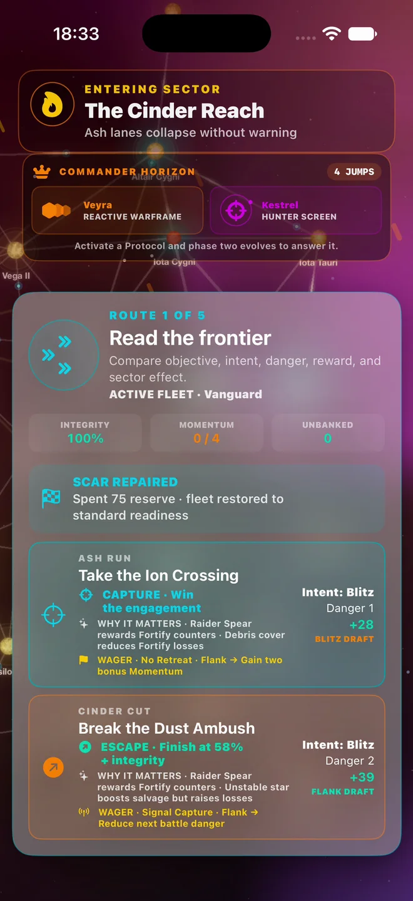

A space roguelite. A fleet worth bringing home.
What is a space roguelite? Explore Fleet Commander’s upcoming Frontier Runs, tactical battles, fleet builds, extraction, and persistent legacy.

What makes a Frontier Run?
In Fleet Commander 1.2.0, a Frontier Run takes your fleet through a sector of encounters. You choose routes, commit tactical orders, and adapt to the rewards you find. The appeal is the sequence of decisions: a useful module can change which battle you want next, while damage can turn an ambitious route into a reason to extract.
Strategy at the point of command
Before a tactical encounter, inspect the visible forecast and compare Blitz, Flank, and Fortify. These are different commitments with different trade-offs. The right choice depends on your fleet, the opponent, and the current conditions. A strong forecast is information, not a guarantee; the battle receipt helps you understand the result.
Your build changes your options
Modules and protocols influence battles and events. Some support a particular tactical order; others improve survivability or what you carry out. Build around what is available in the run. Finding a new combination is part of the experience, rather than following a single permanent upgrade checklist.
The decision to extract
Salvage creates a reason to keep going and a reason to stop. Extraction banks your gains and ends that attempt. Continuing gives you access to further encounters and rival commanders, with the possibility of losing more integrity or ending the run in defeat. Returning with gains is a valid outcome.
What carries forward?
Persistent reserves and fleet history connect your runs. Scars, repairs, and legacy choices give later decisions context. Frontier Runs is the solo tactical experience featured in this update; the older conquest campaign has its own research and prestige systems. The screenshots here show the upcoming 1.2.0 release, not the currently public 1.1.0 campaign.